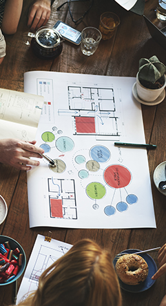

Speciality Restaurants A single-minded mission to make you feel special. It is the group's mission to share with diners authentic and unique cuisines from the world over. To give them a never-before experience and make them 'feel special'. The group has always striven to go to great lengths to pamper and surprise patrons and ensure that every dining experience they have, is something they would remember. From sourcing ingredients from far-off lands to attentive service, it's all done with one objective - to give diners an experience they will cherish forever. Our Vision To become a nationwide renowned and respected brand that serves the best of the global cuisine at all our Fine Dining, Casual Dining, Bar & Lounge, Bakery and Confectionery outlets and restaurants, and be the leading brand serving international cuisines.
Speciality
Our Mission Our journey has traversed cities, connected customers, created memorable cuisines and has lent authenticity to every dish served, every meal enjoyed making every dining experience a step towards a greater milestone. The 'New age offerings,' the vibrant and warm service, the wide selection of global flavours, makes every dining experience truly "special." Each restaurant's elegant ambience, the uniquely crafted recipes, the refinement in personalised service where each customer is treated with love and care, the vibrancy in the carefully curated menu has been a part of our passion to provide you with a one-of-a-kind experience. We have created new paradigms in the hospitality industry, by successfully translating the passion for good food into creating dishes that has culminated into fantastic dining experiences. Speciality Restaurants Limited has been consistently providing world-class cuisine at affordable prices. Our mission will always be to put this "passion on to your plate" and make you a part of our family as we reach for our next milestone!